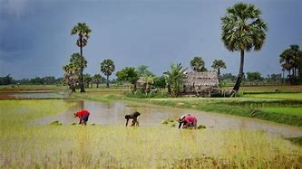
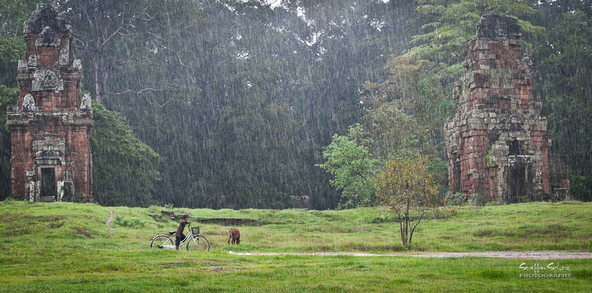

In Cambodia, the climate is tropical,there are 2 seasons: .

"Dryseason picture in Cambodia"
Dry season start from October until April. The avarage timeparature between 20 and 32 degree caltuse
Rainy season start from May until October.The avarage timeparature between 18 and 28 degree caltuse

"Rainyseason picture in Cambodia"
Season
timeparature
Rianny season
18-28
Dry season
20-32
The Best Time to Visit Cambodia
Best time for visitor in the journey is in dry season.Because of dry season
is good weather without raining,
visitor easy go to visit the temples and the daytime is longer that rainy season.